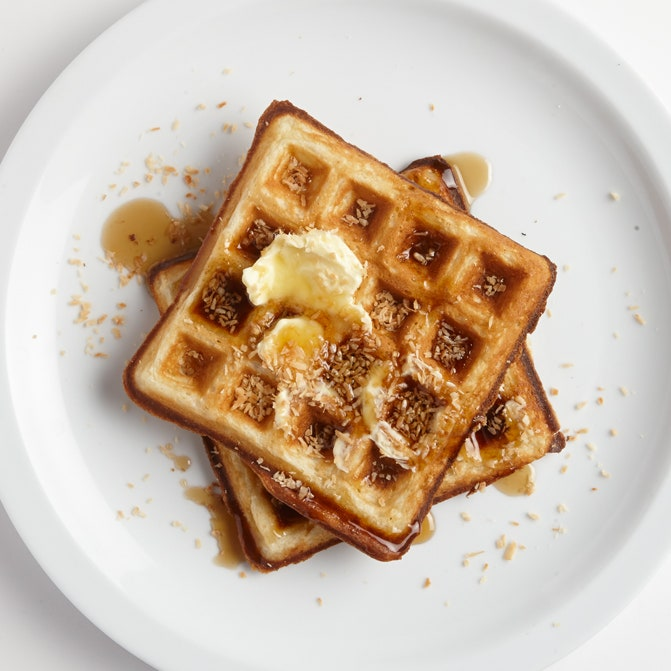

Waffles

Description
You can keep the batter covered in the fridge for up to a week. Just be sure to whisk well before using again. You may also use whole wheat flour for this recipe.
Ingredients
- 2 eggs
- 2 cups all-purpose flour
- 1 ¾ cups milk
- ½ cup vegetable oil
- 1 tablespoon white sugar
- 4 teaspoons baking powder
- ¼ teaspoon salt
- ½ teaspoon vanilla extract
Steps
- Preheat waffle iron. Beat eggs in large bowl with hand beater until fluffy. Beat in flour, milk, vegetable oil, sugar, baking powder, salt and vanilla, just until smooth.
- Spray preheated waffle iron with non-stick cooking spray. Pour mix onto hot waffle iron. Cook until golden brown. Serve hot.